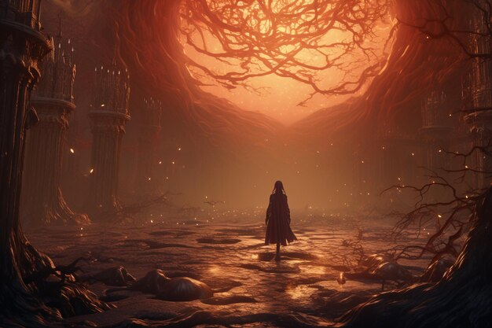
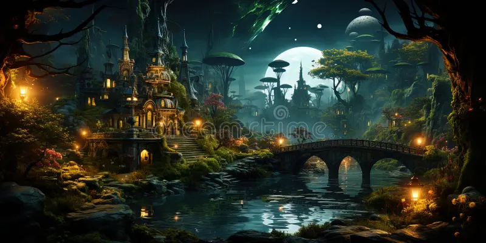

Em um reino antigo e encantado, existiam duas trilhas lendárias que se bifurcavam na base de uma montanha majestosa. A lenda dizia que quem seguisse um desses caminhos encontraria um tesouro inestimável, mas apenas se completasse uma série de desafios que envolviam doze passos de autodescoberta e coragem.
O Caminho da Luz era conhecido por sua beleza deslumbrante e pelo céu sempre claro. Era fácil de percorrer, com flores exuberantes e riachos cintilantes, prometendo um destino de riquezas materiais. Muitos viajantes eram atraídos por este caminho, mas poucos chegavam ao fim, pois a jornada era cheia de distrações e tentações.
O Caminho da Sombra era mais obscuro e cheio de mistérios, com uma vegetação densa e um céu frequentemente encoberto. Embora fosse mais difícil e desafiador, aqueles que o seguiam descobriam que, além das riquezas, encontravam sabedoria e realização pessoal profunda.
Erica teve que atravessar um desfiladeiro estreito sobre uma ponte de corda instável, enfrentando seu medo de altura.
Erica teve que deixar para trás itens valiosos e confortos pessoais para continuar sua jornada, aprendendo sobre a importância de renunciar para alcançar o que realmente importa.
Erica encontrou uma caverna onde teve que refletir sobre suas ações passadas e as lições que aprendeu. Este passo exigiu honestidade consigo mesmo.

Ela encontrou uma fonte mágica que o ajudou a perdoar a si mesmo e os outros, aliviando-se dos arrependimentos que carregava.
Erica teve que enfrentar um dragão guardião, não com violência, mas com coragem e inteligência, provando seu valor.
Em uma batalha contra suas próprias dúvidas e inseguranças, Erica descobriu uma força interior que não sabia que possuía.

Erica encontrou um mentor sábio que o ensinou a ouvir e aprender com os outros, mesmo quando ele achava que sabia o suficiente.
Finalmente, ao alcançar o fim do Caminho da Sombra, Erica encontrou o verdadeiro tesouro: um conhecimento profundo e a capacidade de compartilhar sua sabedoria com outros viajantes.
Encontrou uma biblioteca antiga cheia de pergaminhos e livros, e estudou-os para adquirir sabedoria sobre o caminho e sobre si mesmo.

Encontrou uma biblioteca antiga cheia de pergaminhos e livros, e estudou-os para adquirir sabedoria sobre o caminho e sobre si mesmo.